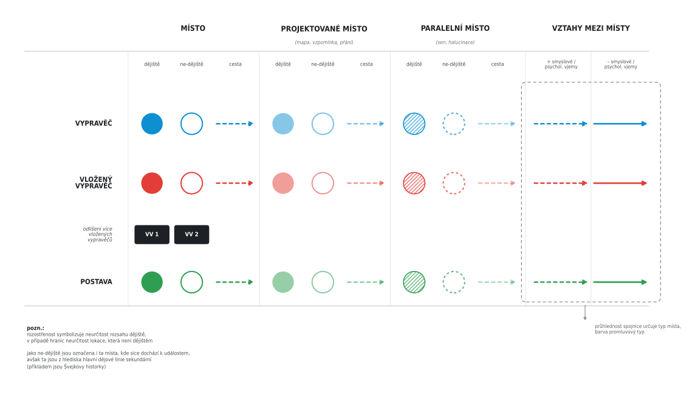

- Home
- Back to Corpus
-
Author Corpus Menu
Literary-Cartography Models and Quantitative Models of Places Frequency of Text Segments, Sentence Length, Narrative Rythm Statistics Sentiment Analysis & Word Clouds Search Word Types by Tags Word Types in Percentages Concordances Collocations Words in Context Lemmas, Frequency Dictionaries, Tokens CQL Stylometry
Literary-Cartography Models and Quantitative Models of Places
Legend


| Title | standard deviations |
|---|---|
| Márinka | 385.08 |
| Křivoklad | 589.10 |
in progress